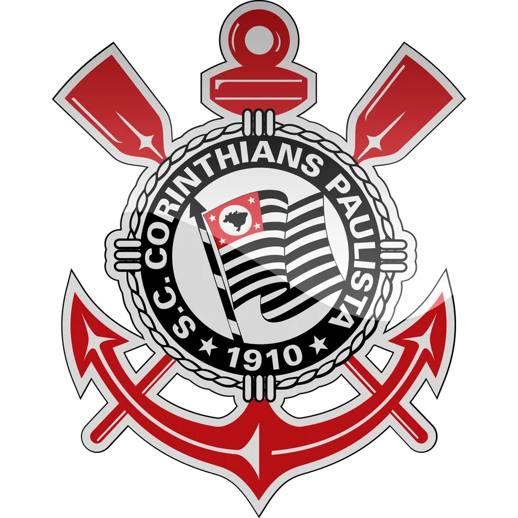
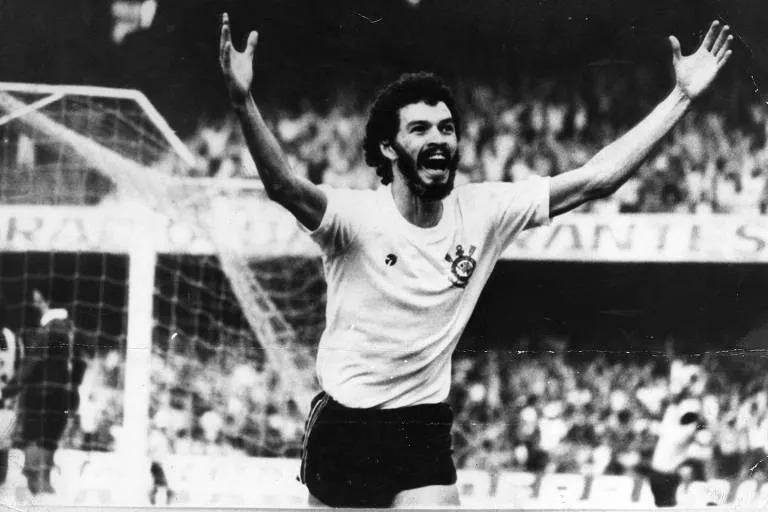

Início História Títulos Jogadores Torcida

Ídolos que vestiram o manto alvinegro

O Doutor, craque e líder da Democracia Corinthiana.
Camisa 10 e herói do primeiro Brasileiro, em 1990.
O Pé de Anjo, famoso pelos gols de falta.
Fez o gol do título paulista de 1977, que acabou com 23 anos sem títulos.
Goleiro da Libertadores e do Mundial de 2012.
Sport Club Corinthians Paulista - desde 1910